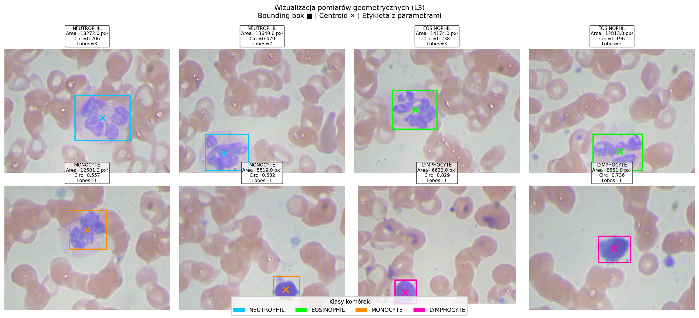
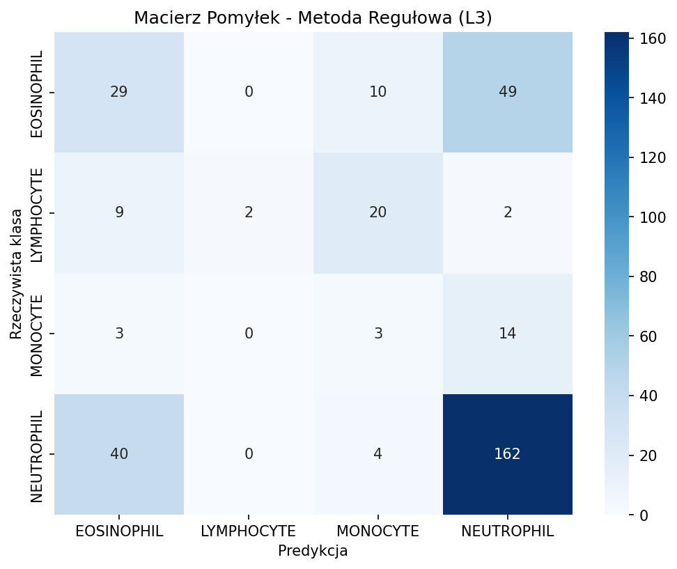
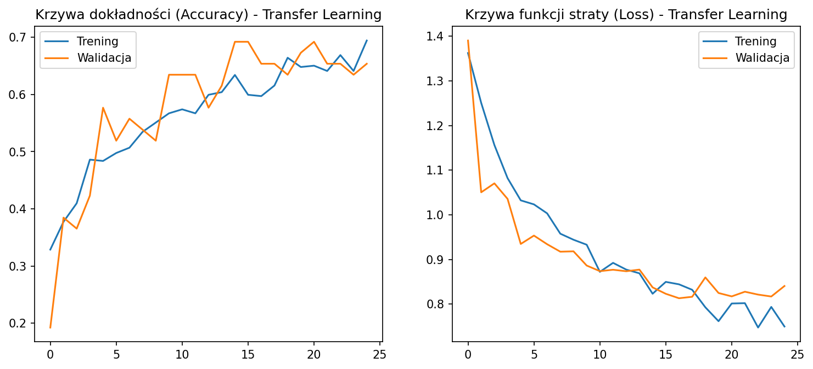
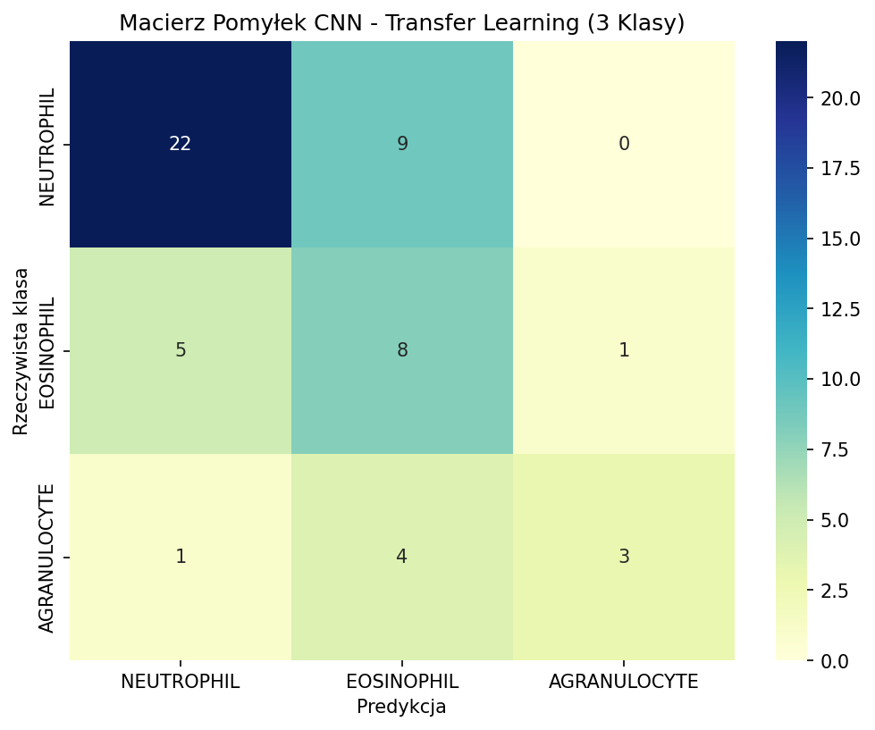

W pierwotnej wersji eksperymentu, z powodu skrajnego zaburzenia proporcji klas (dominacja neutrofili), sieć konwolucyjna wpadała w stan dezorientacji matematycznej. Wprowadzenie wag klasowych prowadziło do oscylacji wokół lokalnego minimum funkcji straty.
Punkt odniesienia dla danych wejściowych w celach porównawczych:
Przetwarzanie obrazów dla 4 oficjalnych klas (bez bazofili)...
--- RESTRUKTURYZACJA DANYCH ZAKOŃCZONA (OSTATECZNE 4 KLASY) ---
Neutrofile: 237 | Eozynofile: 88 | Monocyty: 39 | Limfocyty: 2
=========== RAPORT ANALITYCZNY CV (4 KLASY) ==============
1) WYKRYWANIE OGÓŁEM: 363/408 komórek (88.97%)
2) KLASYFIKACJA TYPÓW (Accuracy): 48.04%
=================================================
================ RAPORT KLASYFIKACJI (L3) ================
precision recall f1-score support
EOSINOPHIL 0.36 0.33 0.34 88
LYMPHOCYTE 1.00 0.06 0.11 33
MONOCYTE 0.08 0.15 0.11 20
NEUTROPHIL 0.71 0.79 0.75 206
accuracy 0.56 347
macro avg 0.54 0.33 0.33 347
weighted avg 0.61 0.56 0.55 347


Architektura sieci splotowej trenowana na zbalansowanych wagach dla 3 skonsolidowanych grup diagnostycznych (Neutrofile, Eozynofile, Agranulocyty):
WARNING: All log messages before absl::InitializeLog() is called are written to STDERR
I0000 00:00:1781531091.371413 24028 port.cc:153] oneDNN custom operations are on. You may see slightly different numerical results due to floating-point round-off errors from different computation orders. To turn them off, set the environment variable `TF_ENABLE_ONEDNN_OPTS=0`.
WARNING: All log messages before absl::InitializeLog() is called are written to STDERR
I0000 00:00:1781531104.907649 24028 port.cc:153] oneDNN custom operations are on. You may see slightly different numerical results due to floating-point round-off errors from different computation orders. To turn them off, set the environment variable `TF_ENABLE_ONEDNN_OPTS=0`.
--- L5 (3-KLASY): BIOLOGICZNA FUZJA KLAS ---
[INFO] Równoważenie zbioru treningowego przez Oversampling...
Zbiory po OVERSAMPLINGU: Trening: 432 | Walidacja: 52 | Test: 53
Found 432 validated image filenames belonging to 3 classes.
Found 52 validated image filenames belonging to 3 classes.
Found 53 validated image filenames belonging to 3 classes.
--- L5 (3-KLASY): INICJALIZACJA TRANSFER LEARNING (MobileNetV2) ---
I0000 00:00:1781531107.439291 24028 cpu_feature_guard.cc:227] This TensorFlow binary is optimized to use available CPU instructions in performance-critical operations.
To enable the following instructions: SSE3 SSE4.1 SSE4.2 AVX AVX2 FMA, in other operations, rebuild TensorFlow with the appropriate compiler flags.
WARNING:tensorflow:TensorFlow GPU support is not available on native Windows for TensorFlow >= 2.11. Even if CUDA/cuDNN are installed, GPU will not be used. Please use WSL2 or the TensorFlow-DirectML plugin.
--- L5 (3-KLASY): TRENING SIECI NEURONOWEJ ---
Epoch 1/25
14/14 - 15s - 1s/step - accuracy: 0.3287 - loss: 1.3625 - val_accuracy: 0.1923 - val_loss: 1.3904
Epoch 2/25
14/14 - 6s - 420ms/step - accuracy: 0.3773 - loss: 1.2507 - val_accuracy: 0.3846 - val_loss: 1.0504
Epoch 3/25
14/14 - 6s - 398ms/step - accuracy: 0.4097 - loss: 1.1564 - val_accuracy: 0.3654 - val_loss: 1.0705
Epoch 4/25
14/14 - 5s - 378ms/step - accuracy: 0.4861 - loss: 1.0822 - val_accuracy: 0.4231 - val_loss: 1.0356
Epoch 5/25
14/14 - 7s - 507ms/step - accuracy: 0.4838 - loss: 1.0324 - val_accuracy: 0.5769 - val_loss: 0.9347
Epoch 6/25
14/14 - 5s - 366ms/step - accuracy: 0.4977 - loss: 1.0233 - val_accuracy: 0.5192 - val_loss: 0.9534
Epoch 7/25
14/14 - 5s - 375ms/step - accuracy: 0.5069 - loss: 1.0032 - val_accuracy: 0.5577 - val_loss: 0.9341
Epoch 8/25
14/14 - 5s - 385ms/step - accuracy: 0.5347 - loss: 0.9577 - val_accuracy: 0.5385 - val_loss: 0.9174
Epoch 9/25
14/14 - 5s - 362ms/step - accuracy: 0.5509 - loss: 0.9441 - val_accuracy: 0.5192 - val_loss: 0.9182
Epoch 10/25
14/14 - 5s - 375ms/step - accuracy: 0.5671 - loss: 0.9330 - val_accuracy: 0.6346 - val_loss: 0.8863
Epoch 11/25
14/14 - 6s - 409ms/step - accuracy: 0.5741 - loss: 0.8722 - val_accuracy: 0.6346 - val_loss: 0.8737
Epoch 12/25
14/14 - 5s - 391ms/step - accuracy: 0.5671 - loss: 0.8923 - val_accuracy: 0.6346 - val_loss: 0.8769
Epoch 13/25
14/14 - 5s - 334ms/step - accuracy: 0.5995 - loss: 0.8772 - val_accuracy: 0.5769 - val_loss: 0.8736
Epoch 14/25
14/14 - 5s - 353ms/step - accuracy: 0.6042 - loss: 0.8689 - val_accuracy: 0.6154 - val_loss: 0.8772
Epoch 15/25
14/14 - 5s - 351ms/step - accuracy: 0.6343 - loss: 0.8231 - val_accuracy: 0.6923 - val_loss: 0.8373
Epoch 16/25
14/14 - 5s - 329ms/step - accuracy: 0.5995 - loss: 0.8497 - val_accuracy: 0.6923 - val_loss: 0.8230
Epoch 17/25
14/14 - 5s - 333ms/step - accuracy: 0.5972 - loss: 0.8442 - val_accuracy: 0.6538 - val_loss: 0.8130
Epoch 18/25
14/14 - 7s - 479ms/step - accuracy: 0.6157 - loss: 0.8320 - val_accuracy: 0.6538 - val_loss: 0.8163
Epoch 19/25
14/14 - 5s - 355ms/step - accuracy: 0.6644 - loss: 0.7928 - val_accuracy: 0.6346 - val_loss: 0.8597
Epoch 20/25
14/14 - 5s - 347ms/step - accuracy: 0.6481 - loss: 0.7616 - val_accuracy: 0.6731 - val_loss: 0.8248
Epoch 21/25
14/14 - 5s - 341ms/step - accuracy: 0.6505 - loss: 0.8013 - val_accuracy: 0.6923 - val_loss: 0.8172
Epoch 22/25
14/14 - 5s - 353ms/step - accuracy: 0.6412 - loss: 0.8020 - val_accuracy: 0.6538 - val_loss: 0.8277
Epoch 23/25
14/14 - 5s - 360ms/step - accuracy: 0.6690 - loss: 0.7474 - val_accuracy: 0.6538 - val_loss: 0.8212
Epoch 24/25
14/14 - 5s - 341ms/step - accuracy: 0.6412 - loss: 0.7936 - val_accuracy: 0.6346 - val_loss: 0.8169
Epoch 25/25
14/14 - 5s - 373ms/step - accuracy: 0.6944 - loss: 0.7497 - val_accuracy: 0.6538 - val_loss: 0.8404
--- L5 (3-KLASY): GENEROWANIE PREDYKCJI I METRYK FINALNYCH ---
[1m1/2[0m [32m━━━━━━━━━━[0m[37m━━━━━━━━━━[0m [1m3s[0m 3s/step
[1m2/2[0m [32m━━━━━━━━━━━━━━━━━━━━[0m[37m[0m [1m0s[0m 2s/step
[1m2/2[0m [32m━━━━━━━━━━━━━━━━━━━━[0m[37m[0m [1m5s[0m 2s/step
================ RAPORT KLASYFIKACJI / METRYKI (L5 - 3 KLASY) ================
precision recall f1-score support
NEUTROPHIL 0.79 0.71 0.75 31
EOSINOPHIL 0.38 0.57 0.46 14
AGRANULOCYTE 0.75 0.38 0.50 8
accuracy 0.62 53
macro avg 0.64 0.55 0.57 53
weighted avg 0.67 0.62 0.63 53
========================================================================


Konsolidacja struktur klasowych i sprowadzenie problemu do 3 klas pozwoliło sieci na stabilizację przebiegu funkcji straty (Loss). Szczegółowe zestawienie macierzy pomyłek jednoznacznie wskazuje, czy model przestał ślepo klasyfikować obrazy do jednej grupy dominującej.